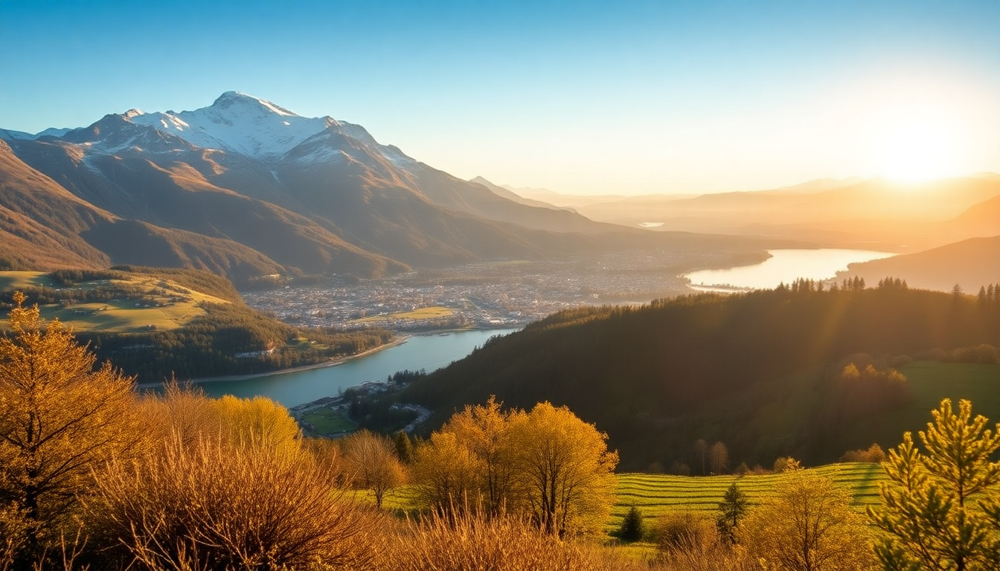

Best Day Trips from Geneva to Mont Blanc and Lausanne

I based myself in Geneva for a week last summer, and honestly, the city itself only needed two days. The real payoff was using it as a launchpad. From the deck of a train to the top of a cable car, I covered three completely different worlds in under two hours each. Here’s exactly how I did it—and what I’d do differently.
Is Chamonix worth it as a day trip from Geneva?
Yes, absolutely—but only if you commit to the early train. I caught the 7:30 AM from Geneva Cornavin station to Saint-Gervais-les-Bains-Le Fayet, then switched to the narrow-gauge Mont Blanc Express. The whole ride is about 1 hour 20 minutes, and the scenery ramps up fast: vineyards give way to pine forests, then suddenly you’re staring at granite peaks.
Chamonix itself is a climbing town, not a resort. That means gear shops and bakeries, not luxury boutiques. I grabbed a croissant at Le Panetier before walking to the Aiguille du Midi cable car. The ride to 3,842 meters is expensive (around €70 round trip) and the queue can hit 45 minutes by 10 AM. Buy tickets online the night before. At the top, you get a direct view of Mont Blanc, plus a glass-box walkway called Step into the Void—it’s a photo op, not an attraction, but the view is genuinely stunning.
- Train route: Geneva to Chamonix via SNCF TGV Léman Express to Saint-Gervais, then Mont Blanc Express. One ticket, no seat reservation needed.
- Lunch spot: La Calèche on Rue du Dr Paccard—fondue is solid, service is fast. Avoid the tourist traps on Place de l’Église.
- Afternoon option: If clouds block the summit, skip Aiguille and take the Montenvers Railway to the Mer de Glace glacier instead. It’s lower, cheaper, and less crowded.
- Return timing: Last train back to Geneva leaves Chamonix around 7 PM. I took the 5:20 PM and had dinner in Geneva by 7:30.
What’s the best way to visit Lausanne from Geneva?
The train is the only answer. The IC1 from Geneva Cornavin to Lausanne runs every 30 minutes and takes exactly 43 minutes. I sat on the left side for lake views. Once you arrive, the station sits on a hill above the old town, so either walk downhill or take the m2 metro one stop to Flon station.
Lausanne feels like a smaller, quieter Geneva—less international, more student energy (the EPFL university crowds the cafés). I spent the morning wandering the Place de la Palud fountain and the covered staircases of the Escaliers du Marché. The Lausanne Cathedral is free to enter, and the climb up the tower (200 steps, 5 francs) gives you a panoramic view of the lake and the Alps.
- Lunch: Café Saint-Pierre on Rue du Bourg—simple quiche and salad, outdoor seating, fair prices.
- Museum pick: Collection de l’Art Brut on Avenue des Bergières. It’s a museum of outsider art, weird and fascinating. Allow 90 minutes.
- Lake walk: From Ouchy port, walk east along the Quai de Belgique toward the Parc de l’Indépendance. Flat, paved, and dotted with benches.
- Wine detour: If you have an extra hour, take the S1 train 10 minutes west to Lavaux Vineyard Terraces. Get off at Lutry and walk the vineyard path back toward Lausanne. It’s a UNESCO site and completely free.
Can you combine Montreux and Lausanne in one day?
You can, but I wouldn’t. I tried it, and the second half felt rushed. Instead, I recommend picking one. If you choose Montreux, the train from Geneva takes 1 hour 10 minutes on the IR90. The Chillon Castle is the main draw—entry is 13.50 francs, and the audio guide is worth it. The lakeside promenade from Montreux to Chillon is 3 km of flowers and peacocks, but it’s crowded on weekends.
If you want a quieter alternative, stop at Vevey instead of Montreux. Vevey’s Charlie Chaplin statue on the lakefront is a quick photo, and the Alimentarium food museum is surprisingly good. I ate at Le Café du Rivage—fish filet with a view of the lake, 28 francs.
- Chillon Castle tip: Visit by 10 AM to avoid school groups. By 11:30, the courtyard is packed.
- Montreux market: The covered market on Rue du Marché runs Saturdays until 1 PM. Honey, cheese, and dried sausages are the best buys.
- Vevey lunch: Le Montreux Jazz Café on the main square is overpriced. Walk two blocks inland to Boulangerie Patisserie de la Gare for a cheap sandwich.
What should I know about the Mont Blanc Express train?
The Mont Blanc Express is a narrow-gauge railway that runs from Saint-Gervais to Chamonix, then continues to Vallorcine and finally Martigny in Switzerland. The section from Saint-Gervais to Chamonix takes about 35 minutes and passes through tunnels, viaducts, and the Servoz valley. Sit on the right side going toward Chamonix for the best river views.
The train is old—wooden benches, no air conditioning, openable windows. In summer, it gets hot. Bring water. The ticket is included in a standard Geneva-to-Chamonix SNCF ticket, so you don’t need a separate purchase. If you have a Swiss Travel Pass, it covers the Geneva-to-Saint-Gervais leg but not the Mont Blanc Express itself (discount applies).
- Frequency: Every 30–60 minutes depending on the season. Check the SNCF app for real-time departures.
- Scenic highlight: The Viaduc des Eaux Noires bridge near Les Houches. The train slows down here, so you have time for a photo.
- Alternative: If the train is full (common on Saturdays), take the bus from Chamonix Sud station to Geneva. It’s 1 hour 30 minutes and costs 15 euros. The bus stop is a 5-minute walk from the Chamonix train station.
Where should I eat in Geneva before or after a day trip?
Don’t eat near the train station. The options around Cornavin are overpriced and mediocre. Instead, walk 10 minutes to the Pâquis neighborhood. I had a late lunch at Chez Ma Cousine on Rue des Alpes—rotisserie chicken with fries and salad, 18 francs. It’s no-frills, cash only, and always busy with locals.
For a nicer dinner, Bistrot du Boeuf Rouge on Rue du Dr-Alfred-Vincent serves steak frites that justifies the 35-franc price tag. Book ahead on weekends. If you’re on a budget, the Migros supermarket at Cornavin has a hot-food counter with pizza slices and spring rolls for under 10 francs.
- Breakfast before Chamonix: Boulangerie du Rhône on Rue du Rhône—pain au chocolat and an espresso, 6 francs.
- Quick dinner after Lausanne: Holy Cow! Gourmet Burger on Rue de Zurich. The “Geneva” burger with raclette cheese is a solid choice.
- Avoid: Restaurant du Parc des Eaux-Vives. It’s pretty but the food is bland and the service is slow.
FAQ
How much time do I need for the Aiguille du Midi cable car? Plan for 3–4 hours total from when you arrive at the cable car base. The queue can take 30–60 minutes, the ride is 20 minutes, and you’ll want at least an hour at the top. Add 30 minutes for the descent. Buy tickets online to save time.
Is a Swiss Travel Pass worth it for day trips from Geneva? Only if you do three or more day trips by train. A three-day pass costs around 230 francs and covers Geneva to Lausanne, Montreux, and the Lavaux vineyards. It does not cover the Mont Blanc Express or the Aiguille du Midi cable car. For a single trip to Chamonix, a standard SNCF ticket is cheaper.
Can I visit Mont Blanc without going to Chamonix? You can see Mont Blanc from Geneva on a clear day—the Jardin Anglais lakefront gives you a distant view. But for an up-close look, you need either the Aiguille du Midi cable car in Chamonix or the Mont Blanc Tramway from Saint-Gervais (which goes to 2,372 meters, lower than Aiguille). Chamonix is the better option for first-timers.
Conclusion
- Chamonix is the best single day trip from Geneva—start early, buy Aiguille du Midi tickets online, and eat at La Calèche to avoid tourist prices.
- Lausanne works as a half-day trip—43 minutes by train, free cathedral climb, and the Art Brut museum is worth the detour.
- Montreux is fine but crowded—skip it on weekends and choose Vevey instead for a quieter lake experience.
- The Mont Blanc Express is a scenic ride, but it’s slow and hot in summer—bring water and sit right-side.
- Don’t eat near Cornavin station—walk to Pâquis or buy from Migros for a cheap, fast meal before or after your trip.